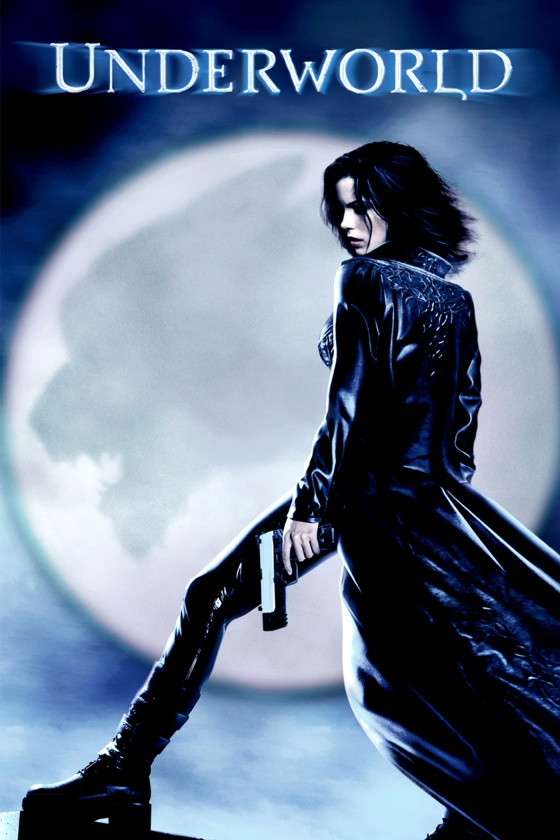

Underworld - Film(2003)
From Wikipedia, the free encyclopedia
Underworld is a 2003 action horror film directed by Len Wiseman in his feature film directorial debut, from a screenplay by Danny McBride, based on a story by Kevin Grevioux, Wiseman, and McBride. The film stars Kate Beckinsale, Scott Speedman, Michael Sheen, Shane Brolly, and Bill Nighy. The plot centers on the secret history of vampires and lycans (an abbreviated form of lycanthrope, which means werewolf). The main plot revolves around Selene (Beckinsale), a vampire Death Dealer hunting Lycans. She finds herself attracted to a human, Michael Corvin (Speedman), who is being targeted by the Lycans. After Michael is bitten by a Lycan, Selene must decide whether to do her duty and kill him or go against her clan and save him.

From Wikipedia, the free encyclopedia
Plot
For generations, vampires and Lycans, an ancient species of werewolf, have secretly waged war. The vampires gain the upper hand when Lycan leader Lucian seemingly dies at the hands of vampire Kraven, who becomes the second-in-command to the vampires' leading elders. Selene, a member of an elite group of vampire assassins known as "Death Dealers", continues to pursue the extermination of the Lycans despite other vampires no longer perceiving them as a threat.
Cast
- Kate Beckinsale as Selene, a Death Dealer
- Scott Speedman as Michael Corvin, a medical student who becomes a hybrid
- Bill Nighy as Viktor, the second most powerful of the vampire elders
- Michael Sheen as Lucian, the leader of the Lycans
- Shane Brolly as Kraven, a vampire noble who plots to kill the elders
- Erwin Leder as Singe, a Lycan scientist who plans with Lucian to make a hybrid creature
- Sophia Myles as Erika, a vampire courtesan who desires Kraven's favor